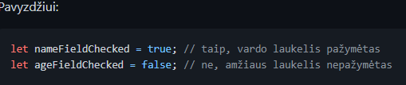

boolean - Boolean tipas turi tik dvi reikšmes: true (tiesa) ir false(netiesa).

array - Masyvas pvz: let book = ['reiksme', 'reiksme', 'reiksme'...]
object - Objektas - pvz: let book = {raktas: 'reiksme' ; raktas1: 'reiksme1'; ......}
Operatoriai
sudetys, atimtis, daugyba, dalyba
laipsnio kelimas , šaknies traukymas, liekanos radimas
lygu, lyyygu, nelygu, nelyyygu
daugiau, mažiau, daugiau arba lygu, mažiau arba lygu
IR, ARBA, NE
tipas (typeof) - Operatorius typeof grąžina argumento tipą. Jis naudingas kai mes norime išskirtinai apdoroti skirtingų tipų vertes arba norime greitai patikrinti tipą.